import pandas as pd
import numpy as np
import pymc3 as pm
import matplotlib.pyplot as plt
import seaborn as snsWARNING (theano.tensor.blas): Using NumPy C-API based implementation for BLAS functions.This is inspired from Dr. Andrew Gelman’s case study, which can be found here. Specifically:
This is not a novel solution. It is merely a replication of Dr. Gelman’s blog in PyMC3.
This is based on a popular blog post by Dr. Andrew Gelman. Here, we are given data from professional golfers on the proportion of success putts from a number of tries. Our aim is to identify:
Can we model the probability of success in golf putting as a function of distance from the hole?
import pandas as pd
import numpy as np
import pymc3 as pm
import matplotlib.pyplot as plt
import seaborn as snsWARNING (theano.tensor.blas): Using NumPy C-API based implementation for BLAS functions.The source repository is present here
data = np.array([[2,1443,1346],
[3,694,577],
[4,455,337],
[5,353,208],
[6,272,149],
[7,256,136],
[8,240,111],
[9,217,69],
[10,200,67],
[11,237,75],
[12,202,52],
[13,192,46],
[14,174,54],
[15,167,28],
[16,201,27],
[17,195,31],
[18,191,33],
[19,147,20],
[20,152,24]])
df = pd.DataFrame(data, columns=[
'distance',
'tries',
'success_count'
])df| distance | tries | success_count | |
|---|---|---|---|
| 0 | 2 | 1443 | 1346 |
| 1 | 3 | 694 | 577 |
| 2 | 4 | 455 | 337 |
| 3 | 5 | 353 | 208 |
| 4 | 6 | 272 | 149 |
| 5 | 7 | 256 | 136 |
| 6 | 8 | 240 | 111 |
| 7 | 9 | 217 | 69 |
| 8 | 10 | 200 | 67 |
| 9 | 11 | 237 | 75 |
| 10 | 12 | 202 | 52 |
| 11 | 13 | 192 | 46 |
| 12 | 14 | 174 | 54 |
| 13 | 15 | 167 | 28 |
| 14 | 16 | 201 | 27 |
| 15 | 17 | 195 | 31 |
| 16 | 18 | 191 | 33 |
| 17 | 19 | 147 | 20 |
| 18 | 20 | 152 | 24 |
The variables have the following format:
| Variable | Units | Description |
|---|---|---|
| distance | feet | Distance from the hole for the putt attempt |
| tries | count | Number of attempts at the chosen distance |
| success_count | count | The total successful putts |
Lets try to visualize the dataset:
df['success_prob'] = df.success_count / df.triessns.set()
plt.figure(figsize=(16, 6))
ax = sns.scatterplot(x='distance', y='success_prob', data=df, s=200)
ax.set(xlabel='Distance from hole(ft)', ylabel='Probability of Success')[Text(0, 0.5, 'Probability of Success'),
Text(0.5, 0, 'Distance from hole(ft)')]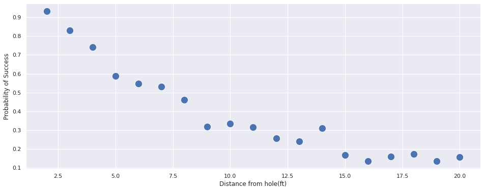
We can notice that the probability of success decreases as the distance increases.
Let us try to see we can fit a simple linear model to the data i.e Logsitic Regression. We will be using PyMC3.
Here, we will attempt to model the success of golf putting by using the distance as an independant(i.e predictor) variable. The model will have the following form:
\[y_i \sim binomial(n_j, logit^{-1}(b_0 + b_1x_j)), \text{for } j = 1,...J \]
with pm.Model() as model:
b_0 = pm.Normal('b_0', mu=0, sd=1)
b_1 = pm.Normal('b_1', mu=0, sd=1)
y = pm.Binomial(
'y',
n=df.tries,
p=pm.math.invlogit(b_0 + b_1 * df.distance),
observed=df.success_count
)Why are we using inverse logit?
pm.model_to_graphviz(model)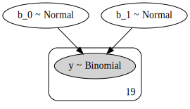
with model:
trace = pm.sample(1000, tune=1000, chains=4)Auto-assigning NUTS sampler...
Initializing NUTS using jitter+adapt_diag...
Multiprocess sampling (4 chains in 2 jobs)
NUTS: [b_1, b_0]
Sampling 4 chains, 0 divergences: 100%|██████████| 8000/8000 [00:06<00:00, 1164.22draws/s]
The acceptance probability does not match the target. It is 0.889539212527967, but should be close to 0.8. Try to increase the number of tuning steps.
The acceptance probability does not match the target. It is 0.6968711559119489, but should be close to 0.8. Try to increase the number of tuning steps.
The number of effective samples is smaller than 25% for some parameters.pm.summary(trace)[['mean', 'sd', 'mcse_mean', 'mcse_sd', 'ess_mean', 'r_hat']]| mean | sd | mcse_mean | mcse_sd | ess_mean | r_hat | |
|---|---|---|---|---|---|---|
| b_0 | 2.226 | 0.060 | 0.002 | 0.001 | 926.0 | 1.01 |
| b_1 | -0.255 | 0.007 | 0.000 | 0.000 | 838.0 | 1.01 |
pm.traceplot(trace)array([[<matplotlib.axes._subplots.AxesSubplot object at 0x7fdfef7cfd68>,
<matplotlib.axes._subplots.AxesSubplot object at 0x7fdfef77efd0>],
[<matplotlib.axes._subplots.AxesSubplot object at 0x7fdfef848828>,
<matplotlib.axes._subplots.AxesSubplot object at 0x7fdfef758a58>]],
dtype=object)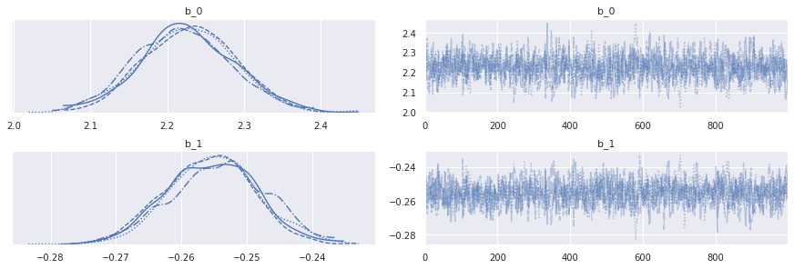
pm.plot_posterior(trace)array([<matplotlib.axes._subplots.AxesSubplot object at 0x7fdfedd70be0>,
<matplotlib.axes._subplots.AxesSubplot object at 0x7fdfedd2a860>],
dtype=object)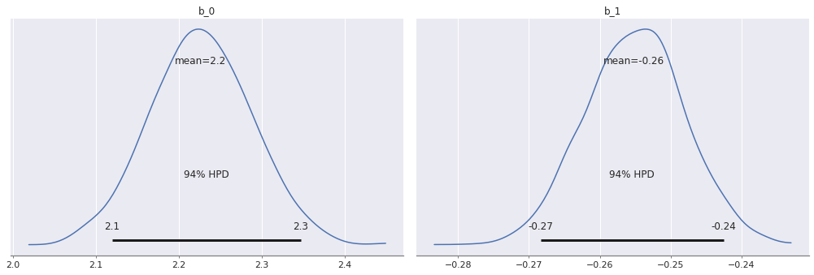
From the above results, we can see:
Let us plot the final output of this model and check it with our training data.
with model:
posterior_trace = pm.sample_posterior_predictive(trace)100%|██████████| 4000/4000 [00:04<00:00, 888.12it/s]posterior_success = posterior_trace['y'] / df.tries.valuesdf['posterior_success_prob'] = pd.DataFrame(posterior_success).median()
df['posterior_success_prob_std'] = pd.DataFrame(posterior_success).std()sns.set()
plt.figure(figsize=(16, 6))
prob = df.success_count/df.tries
ax = sns.scatterplot(x='distance', y=df.success_prob, data=df, s=200, label='actual')
# ls = np.linspace(0, df.distance.max(), 200)
# for index in np.random.randint(0, len(trace), 50):
# ax.plot(
# ls,
# scipy.special.expit(
# trace['b_0'][index] * ls + trace['b_1'][index] * ls
# )
# )
sns.scatterplot(x='distance', y=df.posterior_success_prob, data=df, label='predicted',ax=ax, color='red', s=200)
sns.lineplot(x='distance', y=df.posterior_success_prob, data=df,ax=ax, color='red')
ax.set(xlabel='Distance from hole(ft)', ylabel='Probability of Success')[Text(0, 0.5, 'Probability of Success'),
Text(0.5, 0, 'Distance from hole(ft)')]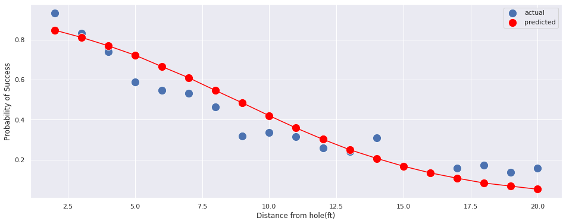
The curve fit is okay, but it can be improved. We can use this as a baseline model. In reality, each of them is not a point, but an posterior estimate. Because the uncertainity is small(as seen above), we’ve decided to show only the median points.
From the above model, putts from 50ft are expected to be made with probability:
import scipy
res = 100 * scipy.special.expit(2.223 + -0.255 * 50).mean()
print(np.round(res, 5),"%")0.00268 %
We’ll try to accomodate the physics associated with the problem. Specically, we assume:
From Dr. Gelman’s blog, we obtain the formula as:
\(Pr(|angle| < sin^{-1}(\frac{(R-r)}{x})) = 2\phi\big(\frac{sin^{-1}\frac{R-r}{x}}{\sigma}\big) - 1\)
\(\phi \implies\) Cumulative Normal Distribution Function.
Hence, our model will now have two big parts:
\[y_j \sim binomial(n_j, p_j)\]
\[p_j = 2\phi\big(\frac{sin^{-1}\frac{R-r}{x}}{\sigma}\big) - 1\]
Typically, the diameter of a golf ball is 1.68 inches and the cup is 4.25 inches i.e
\[r = 1.68 \text{inch}\] \[R = 4.25 \text{inch}\]
ball_radius = (1.68/2)/12
cup_radius = (4.25/2)/12def calculate_prob(angle, distance):
"""
Calculate probability that the ball with fall in the hole given the angle of the shot
and the distance from the hole.
"""
rad = angle * np.pi / 180.0
arcsin = np.arcsin((cup_radius - ball_radius)/ distance)
return 2 * scipy.stats.norm(0, rad).cdf(arcsin) - 1plt.figure(figsize=(16, 6))
ls = np.linspace(0, df.distance.max(), 200)
ax = sns.scatterplot(
x='distance',
y='success_prob',
data=df,
s=100,
legend='full'
)
for angle in [0.5, 1, 2, 5, 20]:
ax.plot(
ls,
calculate_prob(angle, ls),
label=f"Angle={angle}"
)
ax.set(
xlabel='Distance from hole(ft)',
ylabel='Probability of Success'
)
ax.legend()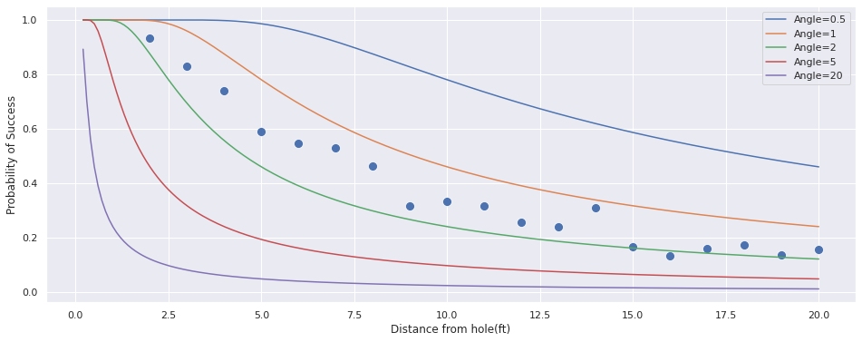
Let us now add this to our model!
import theano.tensor as tt
def calculate_phi(num):
"cdf for standard normal"
q = tt.erf(num / tt.sqrt(2.0)) # ERF is the Gaussian Error
return (1.0 + q) / 2.with pm.Model() as model:
angle_of_shot_radians = pm.HalfNormal('angle_of_shot_radians')
angle_of_shot_degrees = pm.Deterministic(
'angle_of_shot_degrees',
(angle_of_shot_radians * 180.0) / np.pi
)
p_ball_goes_in = pm.Deterministic(
'p_ball_goes_in',
2 * calculate_phi(
tt.arcsin(
(cup_radius - ball_radius)/ df.distance
) / angle_of_shot_radians
)
) - 1
p_success = pm.Binomial(
'p_success',
n=df.tries,
p=p_ball_goes_in,
observed=df.success_count
)pm.model_to_graphviz(model)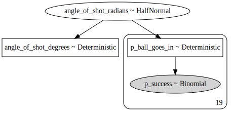
with model:
trace = pm.sample(4000, tune=1000, chains=4)Auto-assigning NUTS sampler...
Initializing NUTS using jitter+adapt_diag...
ERROR (theano.gof.opt): Optimization failure due to: local_grad_log_erfc_neg
ERROR (theano.gof.opt): node: Elemwise{true_div}(Elemwise{mul,no_inplace}.0, Elemwise{erfc,no_inplace}.0)
ERROR (theano.gof.opt): TRACEBACK:
ERROR (theano.gof.opt): Traceback (most recent call last):
File "/home/goodhamgupta/shubham/blog/_notebooks/.env/lib/python3.6/site-packages/theano/gof/opt.py", line 2034, in process_node
replacements = lopt.transform(node)
File "/home/goodhamgupta/shubham/blog/_notebooks/.env/lib/python3.6/site-packages/theano/tensor/opt.py", line 6789, in local_grad_log_erfc_neg
if not exp.owner.inputs[0].owner:
AttributeError: 'NoneType' object has no attribute 'owner'
Multiprocess sampling (4 chains in 2 jobs)
NUTS: [angle_of_shot_radians]
Sampling 4 chains, 0 divergences: 100%|██████████| 20000/20000 [00:10<00:00, 1943.54draws/s]
The acceptance probability does not match the target. It is 0.8844154441842546, but should be close to 0.8. Try to increase the number of tuning steps.pm.summary(trace).head(2)| mean | sd | hpd_3% | hpd_97% | mcse_mean | mcse_sd | ess_mean | ess_sd | ess_bulk | ess_tail | r_hat | |
|---|---|---|---|---|---|---|---|---|---|---|---|
| angle_of_shot_radians | 0.027 | 0.000 | 0.026 | 0.027 | 0.0 | 0.0 | 6641.0 | 6641.0 | 6641.0 | 10874.0 | 1.0 |
| angle_of_shot_degrees | 1.527 | 0.023 | 1.484 | 1.570 | 0.0 | 0.0 | 6641.0 | 6641.0 | 6641.0 | 10874.0 | 1.0 |
pm.plot_posterior(trace['angle_of_shot_degrees'])array([<matplotlib.axes._subplots.AxesSubplot object at 0x7fdfe4c24f60>],
dtype=object)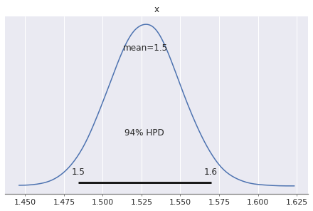
From the above results, we can see:
Let’s visualize the fit with this new model:
geo_model_prob = calculate_prob(
trace['angle_of_shot_degrees'].mean(),
df.distance
)sns.set()
plt.figure(figsize=(16, 6))
ax = sns.scatterplot(x='distance', y=df.success_prob, data=df, s=200, label='Actual')
sns.scatterplot(x='distance', y=df.posterior_success_prob, data=df, label='Logistic Regression',ax=ax, color='red', s=100)
sns.scatterplot(x='distance', y=geo_model_prob, data=df, label='Geometry based ',ax=ax, color='orange', s=100)
sns.lineplot(x='distance', y=df.posterior_success_prob, data=df,ax=ax, color='red')
sns.lineplot(x='distance', y=geo_model_prob, data=df,ax=ax, color='orange')
ax.set(xlabel='Distance from hole(ft)', ylabel='Probability of Success')[Text(0, 0.5, 'Probability of Success'),
Text(0.5, 0, 'Distance from hole(ft)')]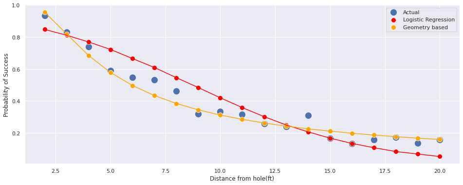
import scipy
lr_result = np.round(
100 * scipy.special.expit(2.223 + -0.255 * 50).mean(),
5
)
geo_result = np.round(
100 * calculate_prob(
trace['angle_of_shot_degrees'].mean(),
50
).mean(),
5
)
print(
f"Logistic Regression Model: {lr_result}% \n"\
f"Geometry Based Model: {geo_result}%"
)Logistic Regression Model: 0.00268%
Geometry Based Model: 6.40322%Mark Broadie obtained new data about the golfers. Let’s see how our model performs on this new dataset.
First, we’ll look at the summary of the dataset.
# golf putting data from Broadie (2018)
new_golf_data = np.array([
[0.28, 45198, 45183],
[0.97, 183020, 182899],
[1.93, 169503, 168594],
[2.92, 113094, 108953],
[3.93, 73855, 64740],
[4.94, 53659, 41106],
[5.94, 42991, 28205],
[6.95, 37050, 21334],
[7.95, 33275, 16615],
[8.95, 30836, 13503],
[9.95, 28637, 11060],
[10.95, 26239, 9032],
[11.95, 24636, 7687],
[12.95, 22876, 6432],
[14.43, 41267, 9813],
[16.43, 35712, 7196],
[18.44, 31573, 5290],
[20.44, 28280, 4086],
[21.95, 13238, 1642],
[24.39, 46570, 4767],
[28.40, 38422, 2980],
[32.39, 31641, 1996],
[36.39, 25604, 1327],
[40.37, 20366, 834],
[44.38, 15977, 559],
[48.37, 11770, 311],
[52.36, 8708, 231],
[57.25, 8878, 204],
[63.23, 5492, 103],
[69.18, 3087, 35],
[75.19, 1742, 24],
])
new_df = pd.DataFrame(
new_golf_data,
columns=['distance', 'tries', 'success_count']
)new_geo_model_prob = calculate_prob(
trace['angle_of_shot_degrees'].mean(),
new_df.distance
)new_df['success_prob'] = new_df.success_count / new_df.tries
sns.set()
plt.figure(figsize=(16, 6))
ax = sns.scatterplot(x='distance', y='success_prob', data=df, label='Old Dataset', s=200)
sns.scatterplot(x='distance', y='success_prob', data=new_df,label='New Dataset', s=200, ax=ax)
sns.scatterplot(x='distance', y=new_geo_model_prob, data=new_df, label='Geometry based Model ',ax=ax, color='red', s=100)
ax.set(
xlabel='Distance from hole(ft)',
ylabel='Probability of Success'
)
plt.setp(ax.get_legend().get_texts(), fontsize='25')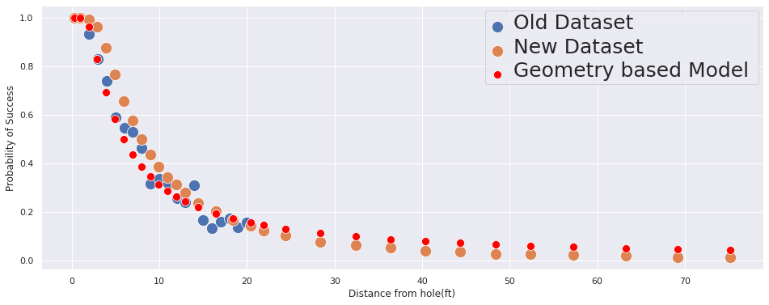
We can see:
To get the ball in, along with the angle, we should also need to take into account if the ball was hit hard enough.
From Colin Caroll’s Blog, we have the following: > Mark Broadie made the following assumptions - If a putt goes short or more than 3 feet past the hole, it will not go in. - Golfers aim for 1 foot past the hole - The distance the ball goes, \(u\), is distributed as: \[ u \sim \mathcal{N}\left(1 + \text{distance}, \sigma_{\text{distance}} (1 + \text{distance})\right), \] where we will learn \(\sigma_{\text{distance}}\).
After working through the geometry and algebra, we get:
\[P(\text{Good shot}) = \bigg(2\phi\big(\frac{sin^{-1}(\frac{R-r}{x})}{\sigma_{angle}}\big)-1\bigg)\bigg(\phi\bigg(\frac{2}{(x+1)\sigma_{distance}}\bigg) - \phi\bigg(\frac{-1}{(x+1)\sigma_{distance}}\bigg)\bigg)\]
Let’s write this down in PyMC3
OVERSHOT = 1.0
DISTANCE_TOLERANCE = 3.0
distances = new_df.distance.values
with pm.Model() as model:
angle_of_shot_radians = pm.HalfNormal('angle_of_shot_radians')
angle_of_shot_degrees = pm.Deterministic(
'angle_of_shot_degrees',
(angle_of_shot_radians * 180.0) / np.pi
)
variance_of_distance = pm.HalfNormal('variance_of_distance')
p_good_angle = pm.Deterministic(
'p_good_angle',
2 * calculate_phi(
tt.arcsin(
(cup_radius - ball_radius)/ distances
) / angle_of_shot_radians
)
) - 1
p_good_distance = pm.Deterministic(
'p_good_distance',
calculate_phi(
(DISTANCE_TOLERANCE - OVERSHOT) / ((distances + OVERSHOT) * variance_of_distance))
- calculate_phi(
-OVERSHOT / ((distances + OVERSHOT) * variance_of_distance))
)
p_success = pm.Binomial(
'p_success',
n=new_df.tries,
p=p_good_angle * p_good_distance,
observed=new_df.success_count
)
pm.model_to_graphviz(model)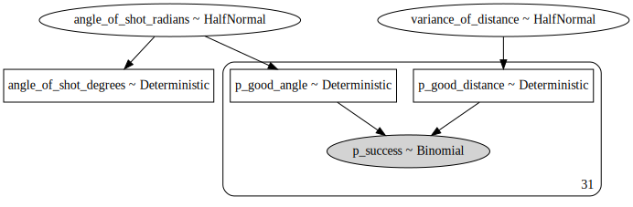
with model:
trace = pm.sample(1000, tune=1000, chains=4)Auto-assigning NUTS sampler...
Initializing NUTS using jitter+adapt_diag...
Multiprocess sampling (4 chains in 2 jobs)
NUTS: [variance_of_distance, angle_of_shot_radians]
Sampling 4 chains, 0 divergences: 100%|██████████| 8000/8000 [00:08<00:00, 969.28draws/s]
The number of effective samples is smaller than 25% for some parameters.pm.summary(trace).head(3)| mean | sd | hpd_3% | hpd_97% | mcse_mean | mcse_sd | ess_mean | ess_sd | ess_bulk | ess_tail | r_hat | |
|---|---|---|---|---|---|---|---|---|---|---|---|
| angle_of_shot_radians | 0.013 | 0.000 | 0.013 | 0.013 | 0.0 | 0.0 | 865.0 | 865.0 | 862.0 | 1109.0 | 1.0 |
| angle_of_shot_degrees | 0.761 | 0.003 | 0.755 | 0.768 | 0.0 | 0.0 | 865.0 | 865.0 | 862.0 | 1109.0 | 1.0 |
| variance_of_distance | 0.137 | 0.001 | 0.136 | 0.138 | 0.0 | 0.0 | 855.0 | 855.0 | 855.0 | 1186.0 | 1.0 |
pm.plot_posterior(trace['variance_of_distance'])array([<matplotlib.axes._subplots.AxesSubplot object at 0x7fdff74693c8>],
dtype=object)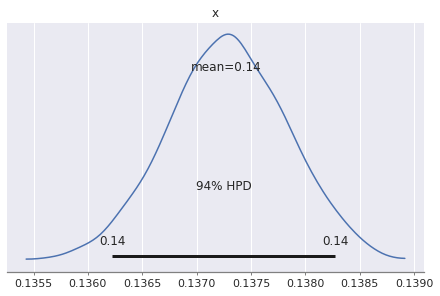
with model:
distance_posterior = pm.sample_posterior_predictive(trace)100%|██████████| 4000/4000 [00:04<00:00, 846.25it/s]def calculate_prob_distance(angle, distance, ls):
"""
Calculate the probability the ball will land inside the hole
given the variance in angle and distance.
NOTE: Adapted from Colin Carroll's Blog.
"""
norm = scipy.stats.norm(0, 1)
prob_angle = 2 * norm.cdf(
np.arcsin((cup_radius - ball_radius) / ls) / angle) - 1
prob_distance_one = norm.cdf(
(DISTANCE_TOLERANCE - OVERSHOT) / ((ls + OVERSHOT) * distance)
)
prob_distance_two = norm.cdf(-OVERSHOT / ((ls + OVERSHOT) * distance))
prob_distance = prob_distance_one - prob_distance_two
return prob_angle * prob_distancels = np.linspace(0, new_df.distance.max(), 200)new_df['success_prob'] = new_df.success_count / new_df.tries
sns.set()
plt.figure(figsize=(16, 6))
ax = sns.scatterplot(
x='distance',
y='success_prob',
data=new_df,
label='Actual',
s=200
)
sns.scatterplot(
x='distance',
y=new_geo_model_prob,
data=new_df,
label='Angle only Model',
ax=ax,
color='red',
s=100
)
sns.scatterplot(
x='distance',
y=calculate_prob_distance(
trace['angle_of_shot_radians'].mean(),
trace['variance_of_distance'].mean(),
new_df.distance
),
data=new_df,
label='Distance + Angle based Model ',
ax=ax,
color='black',
s=100
)
ax.set(
xlabel='Distance from hole(ft)',
ylabel='Probability of Success'
)
plt.setp(ax.get_legend().get_texts(), fontsize='25')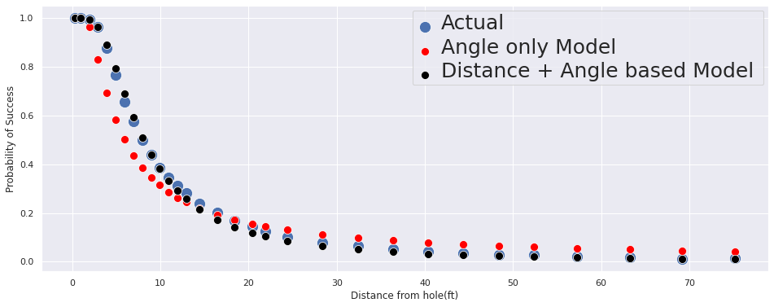
From the graph, we can conclude that:
Using Bayesian analysis, we want to be able to quantify the unvertainity with each of our predictions. Since each prediction is a distribution, we can utilize this to see where the putts will fall if they do not fall in the hole.
def simulate_from_distance(trace, distance_to_hole, trials=10_000):
n_samples = trace['angle_of_shot_radians'].shape[0]
idxs = np.random.randint(0, n_samples, trials)
variance_of_shot = trace['angle_of_shot_radians'][idxs]
variance_of_distance = trace['variance_of_distance'][idxs]
theta = np.random.normal(0, variance_of_shot)
distance = np.random.normal(distance_to_hole + OVERSHOT, (distance_to_hole + OVERSHOT) * variance_of_distance)
final_position = np.array([distance * np.cos(theta), distance * np.sin(theta)])
made_it = np.abs(theta) < np.arcsin((cup_radius - ball_radius) / distance_to_hole)
made_it = made_it * (final_position[0] > distance_to_hole) * (final_position[0] < distance_to_hole + DISTANCE_TOLERANCE)
_, ax = plt.subplots()
ax.plot(0, 0, 'k.', lw=1, mfc='black', ms=150 / distance_to_hole)
ax.plot(*final_position[:, ~made_it], '.', alpha=0.1, mfc='r', ms=250 / distance_to_hole, mew=0.5)
ax.plot(distance_to_hole, 0, 'ko', lw=1, mfc='black', ms=350 / distance_to_hole)
ax.set_facecolor("#e6ffdb")
ax.set_title(f"Final position of {trials:,d} putts from {distance_to_hole}ft.\n({100 * made_it.mean():.1f}% made)")
return ax
simulate_from_distance(trace, distance_to_hole=10);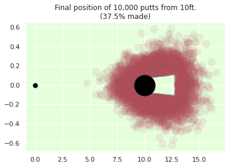
We’ve just seen how incorporate subjective knowledge in our models and help them fit cases that are specific to our use-case.
References: